Step 1
기본 사항
멘토님 역할
1. 멘토링 수업
- 사전에 제출된 과제 검토 및 피드백 준비를 합니다.
- zoom을 통한 주1회 온라인 멘토링 수업을 진행합니다.
2. 수강생 학습 독려
- 출석 및 과제 제출을 독려합니다.
- 과제 수행 중 궁금한 점에 대해 실무 노하우를 살려 답변합니다.
클래스 용어
정규수업
- 연사님의 커리큘럼 녹화 강의입니다.
- 과제 수행에 필요한 이론 설명, 예제 실습 등의 내용으로 이루어집니다.
- 강의를 기반으로 해당 주차의 과제가 제시됩니다.
- 해당 주차의 출석이 반영되면, 이후에는 강의를 계속 복습할 수 있습니다.
멘토링 수업
- 멘토님이 수강생의 과제를 1:1로 피드백하는 실시간 수업입니다. 디스코드 음성 채널에서 진행됩니다.
- 수강생은 실무 노하우, 레퍼런스와 관련 참고자료를 공유 받을 수 있습니다.
- 수강생 1명당 12분 내외의 시간이 배정됩니다.
- 본인의 피드백을 받은 후에는 즉시 퇴장하지 않으며, 다른 수강생의 과제와 피드백까지 참고합니다.
디스코드 소통 채널
- 멘토님과 담당 수강생 간 소통을 위한 대화방(텍스트 채널)입니다.
- 담당 수강생에게 수업 관련 공지사항과 과제 진행 등의 참여 독려 메시지를 전달합니다.
- 수강생은 소통 채널을 통해 과제에 대해 궁금한 점을 멘토님께 질문합니다.
- 소통 채널 및 멘토링 채널은 개강 3일 전까지 초대드립니다.
LMS
학습 관리 시스템
- 수강생이 정규수업을 수강하고, 과제를 제출하는 플랫폼입니다.
- 멘토님은 LMS 사이트 내 담당하는 클래스의 강의실에 접속하여 강의 영상을 미리 숙지하실 수 있습니다.
- 멘토님은 LMS 통합교육관리시스템에서 과제를 사전 점검할 수 있습니다.
스터디윗미
- 24시간 접속 가능한 온라인 자습실입니다.
- 수강생은 정규수업 시청 및 과제 수행 시 스터디윗미에 참여할 수 있습니다.
- 같은 반 수강생과 함께 접속하여 과제를 수행하며 수강 의지를 유지할 수 있습니다.
디스코드 서버 첫 입장 후, 관리자가 강사 승인 과정을 거칠 예정입니다 (영업일 1~2일 소요).
승인 후 반별 소통 채널 및 멘토님 전용 채널 확인이 가능합니다.
승인 후 반별 소통 채널 및 멘토님 전용 채널 확인이 가능합니다.
사전 필수 준비사항
멘토링 녹화를 위한 환경 세팅입니다. 최초 1회만 진행하면 됩니다.
(총 소요 시간: 약 20분)
STEP 1 · OBS Studio 설치
🖥 Windows
- obsproject.com/download 접속 후 Windows 버전 다운로드 및 설치
- 설치 중 "최적화 마법사"가 나오면 취소 (전용 커스텀 프로필을 설정할 예정입니다.)
🍎 Mac
- obsproject.com/download 접속 후 macOS 버전 다운로드, Applications 폴더에 드래그
- 첫 실행 시 아래 4가지 권한 필수 허용 (시스템 설정 > 개인정보 보호 및 보안)
- 화면 및 시스템 오디오 녹음 > OBS 체크
- 마이크 > OBS 체크
- 입력 모니터링 > OBS 체크
- 손쉬운 사용 > OBS 체크
STEP 2 · OBS 프로필 가져오기
⬇ OBS_profile.zip 다운로드- 다운로드한 'OBS_profile.zip'의 압축을 해제하여 "OBS_profile" 폴더를 준비합니다.
- OBS 상단 메뉴 > 프로파일(Profile) > 가져오기(Import)
- "OBS_profile" 폴더 선택 > 열기
- 프로파일(Profile) 메뉴 재선택 > "OBS_profile" 선택
위 설정으로 1080p/30fps, 고품질 녹화가 모두 설정됩니다.
STEP 3 · Google Drive 데스크톱 앱 설치
- google.com/drive/download 접속 후 "데스크톱용 Drive 다운로드" 클릭 > 설치
- 설치 후 Google 계정으로 로그인
- 로그인 후 공유 드라이브 경로 확인
- Mac: /Volumes/GoogleDrive/Shared drives/[bluetiger] 멘토링 녹화본/성함
- Windows: G:\Shared drives\[bluetiger] 멘토링 녹화본\성함
공유 드라이브 확인 불가 시 운영팀에 문의해 주세요.
STEP 4 · OBS 녹화 경로 변경
- OBS 우측 하단 제어 패널의 "설정(Settings)" 버튼 클릭
- 출력(Output) 탭 > "녹화 저장 경로(Recording Path)" 항목 찾기
- "찾아보기(Browse)" 클릭 후 공유 드라이브 내 저장 폴더로 이동
- Mac: Google Drive > Shared drives > 드라이브이름 > 성함으로 된 폴더
- Windows: G:\Shared drives\드라이브이름\성함으로 된 폴더
- "적용(Apply)" > "확인(OK)"
- 해당하시는 폴더가 없을 경우, 공유 드라이브 안에서 우클릭 > 새 폴더로 직접 만들어주세요.
- 녹화본의 정상 저장을 위해, 해당 폴더는 '링크가 있는 모든 사용자'의 '편집자(관리자)' 권한으로 설정해 주세요.
STEP 5 · 화면 캡처 소스 추가
- OBS 하단 "소스 목록(Sources)" 패널 하단의 "+" 클릭 > 화면 캡처(Display Capture) 선택
- 디스플레이 캡처 > 디스코드가 표시될 디스플레이 선택
- OBS 하단 오디오 믹서에서 동작 확인
- "데스크톱 오디오" : 디스코드 소리 재생 시 초록색 바가 움직이면 OK
- "마이크" : 말할 때 초록색 바가 움직이면 OK
- Mac에서 화면 캡처가 검은색으로 나오는 경우: 시스템 설정 > 개인정보 보호 및 보안 > 화면 및 시스템 오디오 녹음에서 OBS 권한을 껐다 킨 후, OBS를 완전 종료(⌘Q) 후 재시작해 주세요.
- 캡처 화면이 잘리거나 크기가 맞지 않는 경우: 소스 우클릭 > 변환 > "화면에 맞추기"를 선택하면 전체 화면 크기에 맞게 조정됩니다.
멘토링 시간에 맞춰 OBS가 자동으로 켜지고 녹화를 시작하도록 설정합니다. 요일마다 강의 시간이 다른 경우 각자 해당 요일로 설정하세요.
STEP 6 · 자동 실행·녹화 설정 — Windows
🖥 작업 스케줄러
6-1. OBS 설치 경로 확인
- 바탕화면 또는 시작 메뉴에서 OBS 아이콘을 우클릭 > '파일 위치 열기' 클릭
- 열린 폴더에서
obs64.exe우클릭 > '속성' > '일반' 탭에서 '위치' 경로를 메모합니다.- 일반적인 기본 경로:
C:\Program Files\obs-studio\bin\64bit\obs64.exe
- 일반적인 기본 경로:
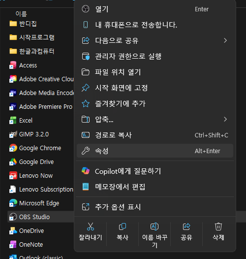
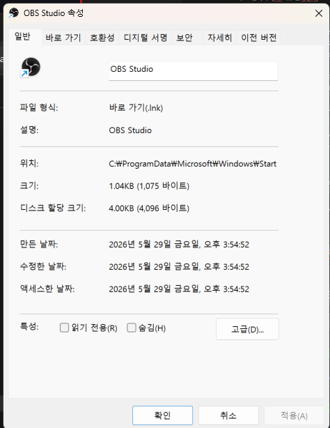
경로가
C:\ProgramData\Microsoft\Windows\Start Menu\Programs 처럼 보이면, obs64.exe를 한 번 더 우클릭 > "파일 위치 열기"를 한 번 더 실행하세요.
6-2. 작업 스케줄러 열기
- Windows 키 + S를 눌러 검색창에 '작업 스케줄러'를 입력하고 클릭합니다.
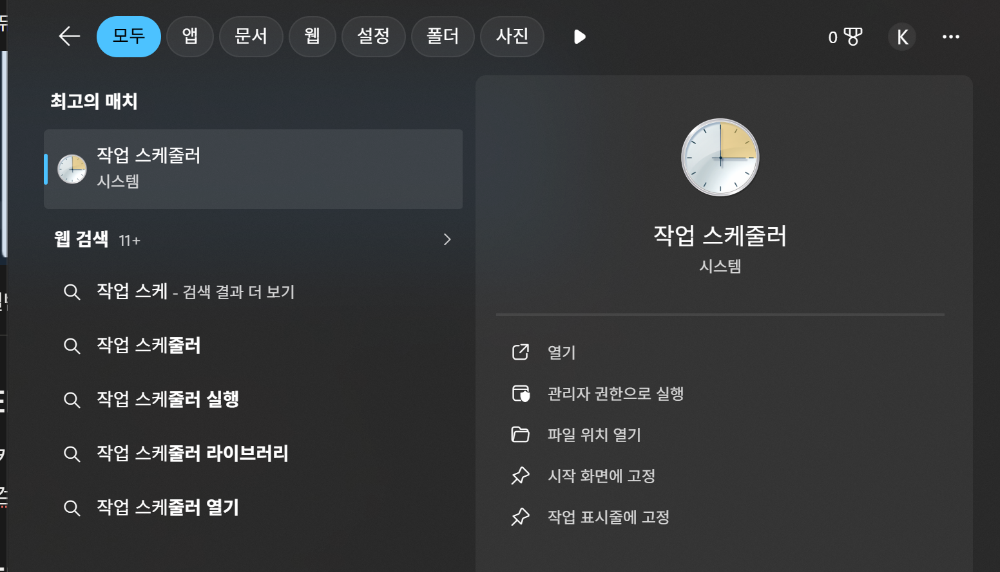
6-3. 새 작업 만들기
- 오른쪽 패널에서 "기본 작업 만들기..."를 클릭합니다.
- 이름 입력 예시: "OBS 자동 실행" → '다음' 클릭
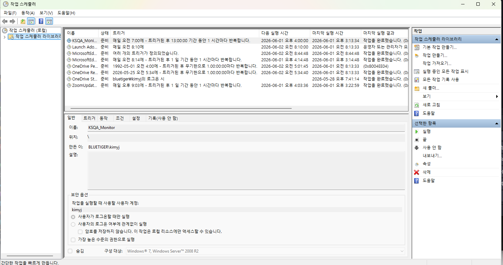
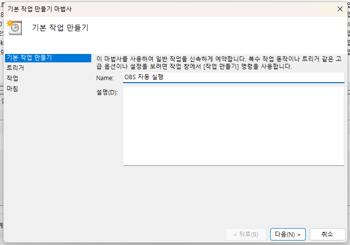
- 트리거 선택: '매주' 선택하고 '다음' 클릭
- 아래 항목을 설정합니다:
- 시작 날짜: 오늘 날짜로 설정
- 실행 시간: 멘토링 수업 10분 전 (예: 멘토링 오후 9시 → 실행 시간 20:50)
- 요일 선택: 본인 강의 요일 체크 (예: 월요일)
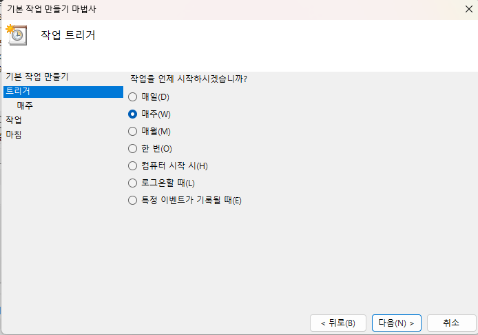
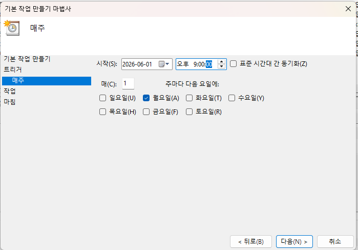
- 동작 선택: '프로그램 시작'을 선택하고 '다음' 클릭
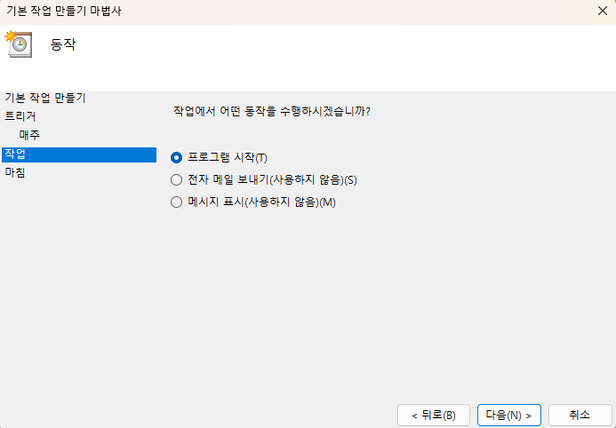
- "찾아보기"를 클릭하여 6-1 단계에서 메모한
obs64.exe경로를 선택합니다. - '인수 추가(선택)' 칸에 아래를 입력합니다(자동 녹화 시작 + 트레이 최소화):
--disable-shutdown-check
- '시작 위치(옵션)' 칸에 아래를 입력합니다:
C:\Program Files\obs-studio\bin\64bit
- '마침'을 클릭하면 완료됩니다.
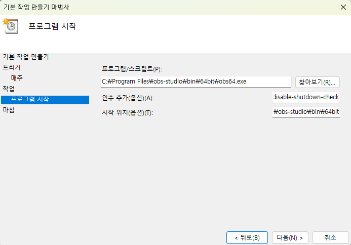
PC가 잠금 상태이거나 절전 모드이면 자동 실행이 되지 않을 수 있습니다.
멘토링 전날 PC 전원이 켜진 상태로 유지해 주세요.
멘토링 전날 PC 전원이 켜진 상태로 유지해 주세요.
STEP 6 · 자동 실행·녹화 설정 — macOS
🍎 crontab
6-1. 터미널 열기
- Command(⌘) + Space로 Spotlight를 열고, '터미널' 입력 후 Enter를 누릅니다.
6-2. crontab 설정
- 터미널에 아래 명령어를 입력하고 Enter를 누릅니다:
crontab -e
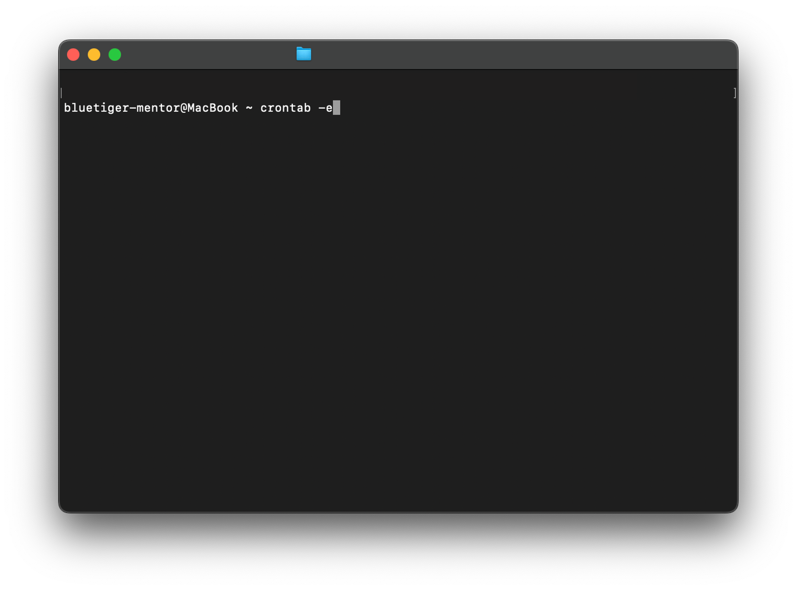
- i를 눌러 입력 모드(INSERT)로 전환 후, 아래 형식으로 입력합니다:
- 50=분, 20=시간(오후 8시), 1=요일(월1, 화2, 토6, 일7)
50 20 * * 1 open -a OBS --args --startrecording
- Esc를 누르고
:wq를 입력한 후 Enter를 누릅니다(저장 후 종료).
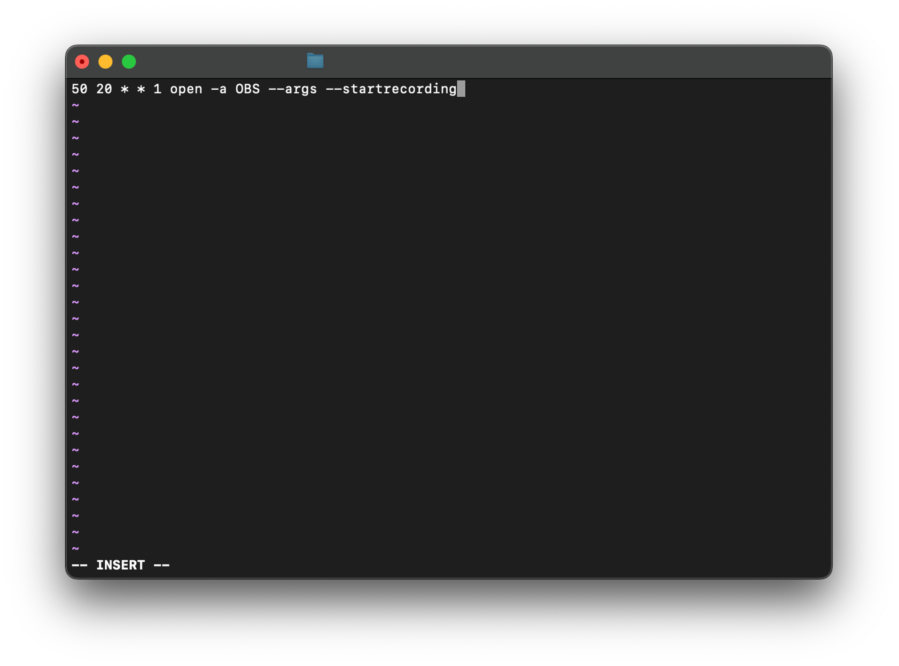
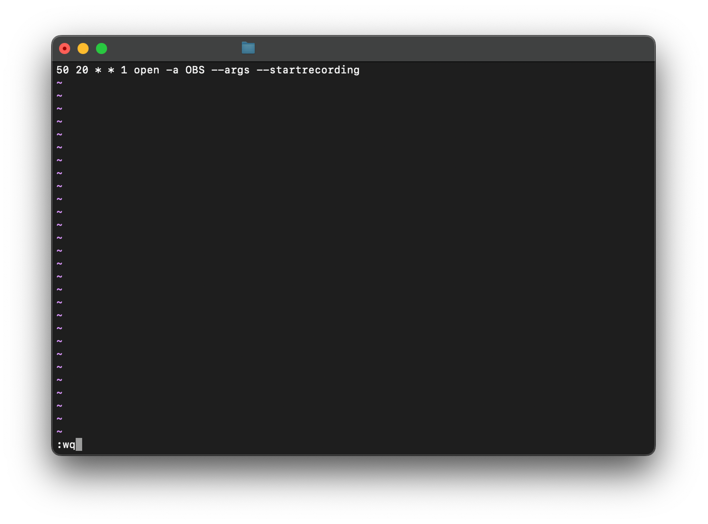
6-3. 권한 허용
- 시스템 설정 > 개인정보 보호 및 보안 > '자동화' 항목에서 터미널이 OBS를 제어하도록 허용합니다.
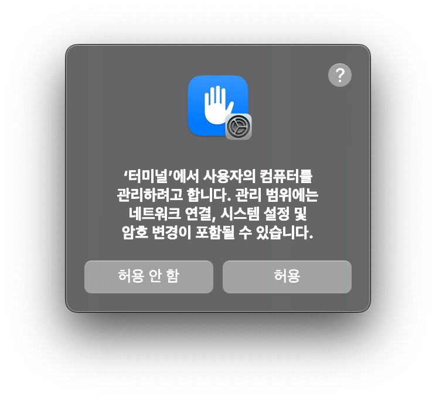
맥이 잠금 상태나 절전 모드이면 crontab이 실행되지 않을 수 있습니다.
시스템 설정 > 배터리에서 '자동으로 잠자기' 시간을 멘토링 시간 이후로 조정해 주세요.
시스템 설정 > 배터리에서 '자동으로 잠자기' 시간을 멘토링 시간 이후로 조정해 주세요.
자동 실행·녹화 끄는 방법
🖥 Windows
- 작업 스케줄러 열기 (Windows 키 + S → '작업 스케줄러' 검색)
- 왼쪽 패널 '작업 스케줄러 라이브러리'에서 설정한 작업을 우클릭
- '사용 안 함' → 일시 중지 / '삭제' → 완전 제거
'사용 안 함'은 나중에 다시 '사용'으로 되돌릴 수 있습니다. 완전히 지우고 싶을 때만 '삭제'를 선택하세요.
🍎 macOS
- 터미널에서
crontab -e입력 후 i로 입력 모드 전환 - OBS 관련 줄 처리
- 1. 일시 중지: 줄 맨 앞에 "#" 추가
# 50 20 * * 1 open -a OBS --args --startrecording - 2. 완전 삭제: 해당 줄 전체 삭제
- 1. 일시 중지: 줄 맨 앞에 "#" 추가
- Esc 후
:wq를 입력하고 Enter로 저장
# 을 붙이면 설정은 그대로 남은 채 비활성화됩니다. 다시 활성화하고 싶을 때 # 만 지우면 됩니다.
녹화 방법 (세팅 완료 후)
STEP 6 자동 실행 설정을 완료하셨다면, 멘토링 시작 시간에 OBS가 자동으로 켜지고 녹화가 자동으로 시작됩니다.
OBS 하단의 녹화 카운터를 확인해 주세요.
OBS 하단의 녹화 카운터를 확인해 주세요.
- 멘토링 종료 후 '녹화 중단' 버튼 또는 F9 키(Mac: fn + F9)를 눌러 녹화를 종료합니다.
- 녹화본은 공유 드라이브의 멘토님 전용 폴더에 자동으로 업로드됩니다.
업로드 완료 전에 PC를 종료하면 업로드가 중단될 수 있습니다.
Google Drive 앱이 백그라운드에서 자동 업로드하므로 PC를 사용하면서 기다리셔도 됩니다.
Google Drive 앱이 백그라운드에서 자동 업로드하므로 PC를 사용하면서 기다리셔도 됩니다.
녹화본 파일 관리
- 파일명은 녹화 시작 시점 기준으로 설정됩니다. 여러 클래스를 담당하시는 경우 녹화 날짜로 클래스를 구분할 수 있습니다.
- 파일명을 수정하시거나, 클래스별 하위 폴더를 만들어 정리하셔도 됩니다.
- 드라이브 웹 링크에 영상이 보이지 않는 경우, 드라이브 앱에서 동기화 상태를 확인해 주세요. 앱에서 동기화가 완료되면 웹에서도 확인할 수 있습니다.
- 드라이브 업로드 후 영상 처리에 시간이 소요될 수 있습니다.
- 영상 링크 공유가 필요하실 경우, 드라이브 전체 링크가 아닌 멘토님 전용 폴더링크를 공유해 주세요.
멘토링 녹화는 매주 빠짐없이 진행해 주세요. 녹화가 누락될 경우 수강생에게 제공되어야 할 복습 자료가 소실됩니다.
🎯 멘토님 미션 · 녹화 테스트 제출 (최초 1회)
세팅이 완료되면 아래 조건으로 자유롭게 테스트 녹화를 진행하신 후, 공유 드라이브 내 녹화 테스트 폴더에 업로드해 주세요.
- 녹화 시간: 3분 이상
- 확인 항목: 스피커(미디어 재생 출력) · 마이크 · 캠(얼굴 및 디스코드 화면 공유 등) 모두 정상 녹화 여부
- 업로드 위치: 공유 드라이브 > 녹화 테스트 폴더
제출 기한: 개강 3일 전까지
미제출 시 운영팀이 별도 확인 연락을 드릴 예정입니다.
미제출 시 운영팀이 별도 확인 연락을 드릴 예정입니다.
Step 2
개강일 멘토링 OT
첫 인사 및 자기소개 작성
[💬디스코드 소통 채널]
담당 수강생과 인사를 나눕니다.
[LMS 사이트]
강의실 내 자유게시판에 자기소개를 작성합니다.
담당 수강생과 인사를 나눕니다.
[LMS 사이트]
강의실 내 자유게시판에 자기소개를 작성합니다.
→
OT 자료 확인 및 준비
[구글 슬라이드 접속]
하단 버튼을 클릭하여 자료를 확인합니다.
자료 다운로드 후 멘토님 소개, 디자인 등을 수정하셔도 됩니다.
자료는 매기수 업데이트될 수 있습니다.
하단 버튼을 클릭하여 자료를 확인합니다.
자료 다운로드 후 멘토님 소개, 디자인 등을 수정하셔도 됩니다.
자료는 매기수 업데이트될 수 있습니다.
→
OT 진행
[20분]
OT 자료를 이용해 멘토링 참여 및 과제 제출에 대해 설명합니다.
[10분]
자기소개와 자유 Q&A를 진행합니다.
OT 자료를 이용해 멘토링 참여 및 과제 제출에 대해 설명합니다.
[10분]
자기소개와 자유 Q&A를 진행합니다.
1. OT 1시간 전
- OT 진행 일시를 디스코드 소통 채널에 전달하여 모든 수강생이 빠짐없이 참여하도록 독려합니다.
2. OT 진행
-
(1) 📹 10분 전 음성 채널 접속
- 10분 전까지 멘토링 전용 음성 채널에 참여 후 네트워크 및 마이크 등 수업 환경을 정비합니다.
-
(2) OT 진행
- OT 시작 전 서로 얼굴을 볼 수 있게 캠을 키도록 독려합니다.
- 자료를 활용하여 반별 OT를 진행합니다.
-
(3) 자기소개
- OT 자료 내 마지막 장표인 ‘자기소개’를 진행합니다.
- 자유게시판에 작성한 자기소개를 바탕으로 먼저 멘토님을 간단히 소개합니다.
- OT에 참여한 모든 수강생들과 간단히 소개를 나눕니다.
-
(4) 자유 Q&A
- 자기소개 후 남은시간 동안 자유롭게 질의응답 시간을 가집니다.
3. OT 종료 후
- 출석부에 자동으로 기록된 1주차 멘토링(OT) 출결을 점검합니다. (출석 = 1, 결석 = 공백)
- 불참자가 있다면 OT 내용을 숙지할 수 있도록 자료를 소통 채널에 공유합니다.
- 수강생이 자기소개를 작성하고 소통 채널에서 취향을 나눌 수 있도록 안내합니다.
- 모든 분들의 소개글을 읽고 소통하는 것이 첫 멘토링의 분위기를 좌우합니다.
- 1주차 정규수업을 시청하며, 본격적인 클래스 수강을 시작하도록 안내합니다.
Step 3
강의 내용 숙지 및 과제 점검
사전 강의 내용 숙지
- LMS 사이트 내 나의 강의실에 접속합니다.
- ‘수강 중인 과정’ 목록에서 담당하는 클래스/기수의 강의실에 입장합니다.
- 다음 멘토링 진행 전 ‘강의목차’에서 정규수업 강의 영상을 숙지하고, 강의자료 및 과제를 확인합니다.
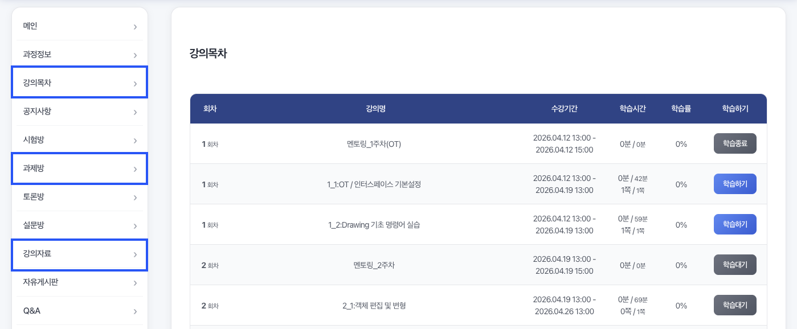
🔗 LMS 사이트사전 과제 점검
- 교육통합관리시스템 내 통합과제관리에 접속합니다.
- 담당 수강생이 제출한 과제를 확인하고, 우측 ‘평가하기’ 버튼을 눌러 수강생의 과제를 검토합니다.
- 과제를 제출했을 시 100점을 입력하고, 멘토링 수업 전 미리 전달할 내용을 평가의견란에 작성합니다.
- LMS 평가 기입 후, 출석부에서 해당 주차 과제 제출 여부를 체크합니다.
- 평가 점수는 담당 수강생의 참여율에 과제 제출 여부가 반영될 수 있도록 반드시 100점을 기입해 주세요.
- 출석부 내 멘토링은 자동으로 체크되나, 과제는 직접 체크해주셔야 합니다.
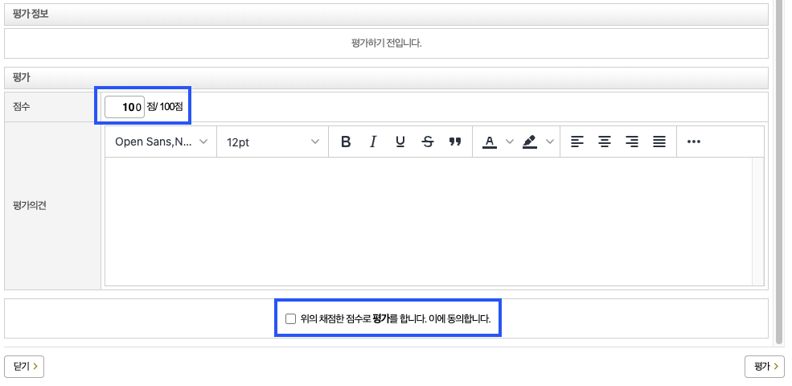
🔗 LMS 교육통합관리시스템교육통합관리시스템의 추가 기능
1. 수강생별교육현황
- 담당하는 클래스/기수의 수강생 이름을 클릭해 수강생의 연락처 등 정보를 확인합니다.
- ‘진도율’은 정규수업 및 과제 제출에 대한 참여율을 의미하며, ‘과제’ 열을 통해 제출 여부 및 종합 점수를 확인합니다.
- 클래스 수료 기준은 진도율 80% 이상 및 전주차 과제 제출입니다.
2. 과정게시판관리
- ‘Q&A’에서 담당 수강생이 강의 내용 또는 과제와 관련되어 LMS 사이트에 올린 질문을 확인하고, 24시간 이내에 답변합니다.
Step 4
멘토링 진행
1. 수업 1시간 전
- 멘토링 진행 일시를 디스코드 소통 채널에 전달하여 수강생이 빠짐없이 참여하도록 독려합니다.
- 과제 제출자를 기준으로 멘토링 순서를 지정합니다. (제출순, 랜덤순 등)
- 수강생 일정에 따라 유동적으로 순서를 조율할 수 있습니다.
2. 수업 진행 중
- 10분 전까지 음성 채널에 참여 후 네트워크 및 마이크 등 수업 환경을 정비합니다.
- 수강생 입장 후 간단한 인사를 나누고, 순서대로 과제 피드백과 사전질문 답변을 진행합니다.
- 피드백은 모두 한 공간에 모여 진행됩니다.
- 수강생은 다른 수강생의 피드백을 들으며 내 과제 디벨롭을 위한 아이디어를 얻습니다.
참고사항
- 미참여 수강생은 피드백하지 않는 것이 원칙이나, 특이사항이 있는 경우 수강생과 논의하여 실시간 보강으로 피드백을 제공할 수 있습니다.
- 보강은 동일한 음성 채널에서 진행하며, 담당자에게 보강이 진행될 일시 및 명단을 미리 공유합니다.
3. 수업 종료 후
- 멘토링 수업 종료 후 자동으로 체크된 멘토링 출결을 점검합니다.
- 수업에 참여하지 못한 수강생을 위해 정규수업 수강 및 과제 진행을 독려합니다.
소통 채널 및 멘토링 채널은 종강 1주 후 삭제됩니다.
Step 5
수강생 참여 독려
소통 채널 활용
- 반별 소통 채널을 통해 멘토링 전날 과제 제출을 리마인드하고, 스터디윗미(온라인 자습실) 사용을 권장합니다. 가벼운 안부나 스몰톡으로 편한 분위기를 만들어두면 마지막 주차까지 참여 분위기를 유지하는 데 도움이 됩니다.
- 수강생이 과제 제출 페이지나 소통 채널에서 질문할 수 있도록 독려하되, 정규수업 권한 등 운영 문의는 LMS내 채널톡 문의로 안내합니다.
수강생 메시지에 빠르게 응답할 수 있도록 디스코드 모바일 앱 활용을 권장드립니다.
멘토링 준비 시
- 멘토링 전날, 수강생이 제출한 과제와 사전 질문을 미리 검토해 피드백을 준비합니다. 멘토링 시작 시 "미리 살펴봤다"는 언급 한마디는 수강생에게 신뢰와 동기를 줍니다.
- 수업 중 설명한 자료나 참고할 만한 레퍼런스, 현업 노하우가 있다면 함께 공유합니다.
멘토링 진행 시
- 수업 시작 전 가볍게 스몰톡을 나누며 분위기를 풀면 수강생이 편하게 의견을 낼 수 있는 상태로 본 수업에 들어올 수 있습니다.
- 피드백은 다음 3단계 구조를 기본으로 활용합니다: ① 잘한 점 → ② 개선 포인트 → ③ 제안
- 일방적인 강의보다는, 중간중간 질문과 의견을 주고받는 방식으로 진행합니다. 수강생의 브리핑을 듣고 피드백을 줄 때도 티키타카를 유지하면 수강생이 수동적으로 듣는 것이 아니라 함께 탐색하는 느낌을 받습니다.
- 단순한 감상평보다 근거를 담아 전달하고, 개인적인 선입견이 섞이지 않도록 주의합니다. 같은 상황에는 일관된 기준으로 대응해야 수강생이 안정감을 느낍니다.
참여율을 높이는 태도
- 참여율은 결국 멘토에 대한 신뢰와 수강생의 학습 의지에서 나옵니다. '전문가'이기 이전에 '함께 배우는 파트너'의 자세로 접근하고, 피드백 이후 간단한 팔로업 대화로 관심을 표현하면 수강생이 꾸준히 시도할 수 있는 학습 분위기가 만들어집니다.
- 시간 준수, 과제 사전 확인 등의 작은 약속을 지키는 것은 신뢰의 기반입니다.
Check List
체크리스트
매 수업마다 놓치지 말아야 할 핵심 업무를 순서대로 정리했습니다. 수업 전부터 종료 후까지 하나씩 체크하며 진행해 주세요.
사전 과제 검토 및 평가 입력
통합과제관리에서 수강생 제출 과제 확인 및 100점 입력 후, 출석부에서 과제 제출 체크
수업 1시간 전 디스코드 소통 채널 공지
소통 전용 텍스트 채널에 진행 일시 전달 및 참여 독려 메시지 발송
10분 전 음성 채널 접속
멘토링 전용 음성 채널 접속 후 네트워크 및 마이크 환경 점검
멘토링 녹화 확인
OBS 하단 녹화 카운터 확인 (자동 시작) · 미시작 시 F9 (Mac: fn+F9) 수동 시작
수업 종료 후 출결 점검
출석부에서 멘토링 및 과제 출결 상황 확인
미제출·미참여 수강생 팔로업
불참자에게 관련 자료 공유 또는 과제 진행 리마인드 메시지 발송
0 / 6 완료
FAQ
자주 묻는 질문
여러 클래스의 멘토링이 동시에 진행될 경우, 출결 반영에 시간이 소요될 수 있습니다.
잠시 기다려주신 후 출석부를 다시 확인해주시면 감사하겠습니다.
잠시 기다려주신 후 출석부를 다시 확인해주시면 감사하겠습니다.
LMS 교육통합관리시스템 내 통합과제관리에서 주차별 제출된 과제를 확인합니다.
- ‘평가하기’ 버튼을 눌러 수강생의 과제를 검토합니다.
- 과제를 제출했을 시 100점을 입력하고, 수업 전 미리 전달할 내용이 있을 시 평가의견란에 작성합니다.
수강생과 같은 화면으로 강의 영상 및 자료와 과제를 확인하실 수 있도록 지급드려, 학습 독려 메시지를 받으실 수 있습니다.
- 학습 독려 메시지는 [02-332-1277] 번호로 발송됩니다.
- 멘토님 공지사항은 카카오 알림톡 및 [070-7771-8297] 번호로 전달드립니다.
- PC가 잠금 화면 상태이거나 절전 모드이면 자동 실행이 되지 않을 수 있습니다. 멘토링 당일 PC 전원이 켜진 상태인지 확인해 주세요.
- Windows: 작업 스케줄러에서 해당 작업의 '조건' 탭 → 'AC 전원 연결 시에만 실행' 옵션을 해제해 보세요.
- Mac: 시스템 설정 → 배터리에서 '자동으로 잠자기' 시간을 멘토링 시간 이후로 조정해 주세요.
작업 스케줄러 > 해당 작업 더블클릭 > "동작" 탭 > 편집에서 '인수 추가' 칸에
--startrecording 이 포함되어 있는지 확인해 주세요.
디스코드 하단 "멘토님-문의사항"에 말씀해주시면 최대한 빠르게 확인 후 안내 도와드리겠습니다. 협조해 주셔서 감사합니다.